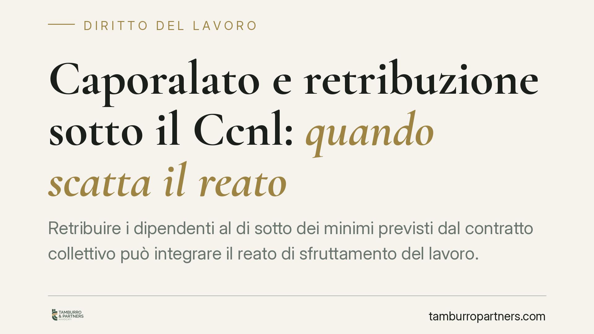

Caporalato e retribuzione sotto il Ccnl: quando scatta il reato
Retribuire i dipendenti al di sotto dei minimi previsti dal contratto collettivo può integrare il reato di sfruttamento del lavoro. Lo ribadisce la Cassazione penale, chiarendo che non serve provare un intento specifico di sfruttamento: basta il dolo generico, se le condizioni di lavoro risultano complessivamente sproporzionate. Una pronuncia che ridefinisce i confini del rischio penale per i datori.

Il caso
La Cassazione Penale, Sezione Quarta, è tornata sul reato di sfruttamento del lavoro previsto dall'art. 603-bis del codice penale, il cosiddetto "caporalato". La vicenda riguardava un datore di lavoro che impiegava lavoratrici straniere prive di regolare titolo, corrispondendo retribuzioni inferiori a quanto stabilito dal contratto collettivo nazionale di lavoro (Ccnl) applicabile.
Il punto giuridico affrontato è netto: la retribuzione palesemente difforme dai minimi contrattuali costituisce uno degli indici tipici dello sfruttamento. E ciò a prescindere dalla dimostrazione di una volontà mirata di approfittare della debolezza del lavoratore.
Inquadramento normativo
L'art. 603-bis c.p. punisce chi recluta o impiega manodopera in condizioni di sfruttamento, approfittando dello stato di bisogno dei lavoratori. La norma individua alcuni indici di sfruttamento: tra questi, la reiterata corresponsione di retribuzioni "palesemente difformi dai contratti collettivi" o comunque sproporzionate rispetto alla quantità e qualità del lavoro prestato.
Accanto al dato retributivo, la disposizione considera la violazione sistematica della normativa su orario, riposi, ferie e sicurezza, oltre a condizioni di lavoro degradanti o alloggi indegni.
La Cassazione precisa un aspetto tecnico rilevante. Per la configurazione del reato è sufficiente il dolo generico: cioè la consapevolezza e volontà di impiegare il lavoratore in condizioni di sfruttamento, approfittandone lo stato di bisogno. Non occorre invece il dolo specifico, ossia un ulteriore intento di trarre profitto sfruttando deliberatamente la persona. In termini pratici, chi paga sotto il Ccnl e conosce la situazione di vulnerabilità del lavoratore risponde del reato, anche senza un progetto premeditato di abuso.
Cosa cambia in concreto
La pronuncia sposta l'attenzione dalla prova dell'intenzione soggettiva alla verifica oggettiva delle condizioni di impiego. Non basta più difendersi sostenendo di non aver voluto "sfruttare" nessuno: se il quadro complessivo evidenzia retribuzioni sproporzionate e violazioni delle tutele minime, il rischio penale è concreto.
Un secondo elemento merita attenzione. La sproporzione va valutata nel complesso: il singolo scostamento retributivo, isolato, potrebbe non bastare, ma la somma di più indici (paga bassa, orari eccessivi, mancanza di riposi, condizioni degradanti) rafforza il giudizio di sfruttamento.
Il profilo dell'irregolarità del soggiorno delle lavoratrici incide sulla valutazione dello stato di bisogno, che rende la persona più esposta e meno in grado di rifiutare condizioni penalizzanti. La particolare vulnerabilità aggrava il quadro.
Attenzione, però: la sotto-retribuzione, di per sé, non trasforma automaticamente ogni datore in autore del reato. Occorre la compresenza degli altri presupposti, in particolare l'approfittamento dello stato di bisogno. La linea di confine tra inadempimento contrattuale (che resta sul piano civilistico) e sfruttamento penalmente rilevante passa proprio da questa valutazione complessiva.
Implicazioni per l'impresa
Per datori di lavoro e responsabili delle risorse umane il messaggio è chiaro: il rispetto dei minimi contrattuali non è solo una questione di corretta gestione del rapporto, ma un presidio contro un'esposizione penale seria. Il reato di caporalato prevede pene detentive e sanzioni pecuniarie significative, oltre a possibili conseguenze per l'ente ai sensi della responsabilità amministrativa da reato.
Particolare cautela va riservata ai settori a maggiore intensità di manodopera e ai contesti in cui si impiegano lavoratori stranieri, stagionali o in condizione di fragilità economica.
Cosa fare in concreto
- Verificate l'allineamento retributivo di tutti i dipendenti ai minimi del Ccnl applicabile, documentando buste paga e voci retributive.
- Controllate orari, riposi e ferie: le violazioni sistematiche delle tutele contribuiscono al giudizio di sfruttamento.
- Regolarizzate le posizioni dei lavoratori privi di titolo di soggiorno o intervenite tempestivamente sui rapporti irregolari.
- Adottate procedure interne di controllo su assunzioni, catena degli appalti e subfornitura, dove il rischio caporalato è più elevato.
- Richiedete una verifica legale preventiva in presenza di situazioni dubbie, prima che un accertamento ispettivo trasformi un'irregolarità in un procedimento penale.
---
*Contributo informativo a cura di Tamburro & Partners - Avv. Giuseppe Tamburro. Non costituisce parere legale.*
Ogni storia di lavoro ha i suoi tempi.
Se gestisci HR e vuoi un confronto su contenzioso, ispezioni o licenziamenti, scrivi allo studio. Ti rispondiamo entro un giorno lavorativo.